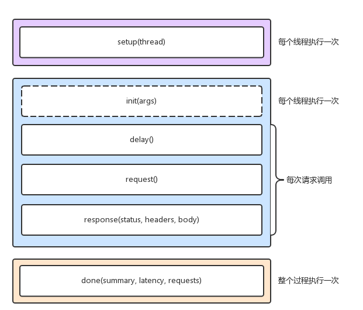

要实现 C10M，就不是增加物理资源、调优内核和应用程序可以解决的问题了。这时内核中冗长的网络协议栈就成了最大的负担。
- 需要用 XDP 方式，在内核协议栈之前，先处理网络包。
- 或基于 DPDK ，直接跳过网络协议栈，在用户空间通过轮询的方式处理。
性能指标回顾
首先，带宽，表示链路的最大传输速率，单位是 b/s（比特 / 秒）。在你为服务器选购网卡时，带宽就是最核心的参考指标。常用的带宽有 1000M、10G、40G、100G 等。
第二，吞吐量，表示没有丢包时的最大数据传输速率，单位通常为 b/s （比特 / 秒）或者 B/s（字节 / 秒）。吞吐量受带宽的限制，吞吐量 / 带宽也就是该网络链路的使用率。
第三，延时，表示从网络请求发出后，一直到收到远端响应，所需要的时间延迟。这个指标在不同场景中可能会有不同的含义。它可以表示建立连接需要的时间（比如 TCP 握手延时），或者一个数据包往返所需时间（比如 RTT）。
最后，PPS，是 Packet Per Second（包 / 秒）的缩写，表示以网络包为单位的传输速率。PPS 通常用来评估网络的转发能力，而基于 Linux 服务器的转发，很容易受到网络包大小的影响（交换机通常不会受到太大影响，即交换机可以线性转发）。
这四个指标中，带宽跟物理网卡配置是直接关联的。一般来说，网卡确定后，带宽也就确定了（当然，实际带宽会受限于整个网络链路中最小的那个模块）。
网络基准测试
- 基于 HTTP 或者 HTTPS 的 Web 应用程序，显然属于应用层，需要我们测试 HTTP/HTTPS 的性能；
- 而对大多数游戏服务器来说，为了支持更大的同时在线人数，通常会基于 TCP 或 UDP ，与客户端进行交互，这时就需要我们测试 TCP/UDP 的性能；当
- 然，还有一些场景，是把 Linux 作为一个软交换机或者路由器来用的。这种情况下，你更关注网络包的处理能力（即 PPS），重点关注网络层的转发性能。
各协议层的性能测试
转发性能
Linux 内核自带的高性能网络测试工具 pktgen。pktgen 支持丰富的自定义选项，方便你根据实际需要构造所需网络包，从而更准确地测试出目标服务器的性能。
TCP/UDP 性能
相应的测试工具，比如 iperf 或者 netperf。
HTTP 性能
要测试 HTTP 的性能，也有大量的工具可以使用，比如 ab、webbench 等，都是常用的 HTTP 压力测试工具。其中，ab 是 Apache 自带的 HTTP 压测工具，主要测试 HTTP 服务的每秒请求数、请求延迟、吞吐量以及请求延迟的分布情况等。
应用负载性能
可以用 wrk、TCPCopy、Jmeter 或者 LoadRunner 等实现这个目标。

小结
性能评估是优化网络性能的前提，只有在你发现网络性能瓶颈时，才需要进行网络性能优化。根据 TCP/IP 协议栈的原理，不同协议层关注的性能重点不完全一样，也就对应不同的性能测试方法。比如，
- 在应用层，你可以使用 wrk、Jmeter 等模拟用户的负载，测试应用程序的每秒请求数、处理延迟、错误数等；
- 而在传输层，则可以使用 iperf 等工具，测试 TCP 的吞吐情况；
- 再向下，你还可以用 Linux 内核自带的 pktgen ，测试服务器的 PPS。由于低层协议是高层协议的基础。
所以，一般情况下，我们需要从上到下，对每个协议层进行性能测试，然后根据性能测试的结果，结合 Linux 网络协议栈的原理，找出导致性能瓶颈的根源，进而优化网络性能。